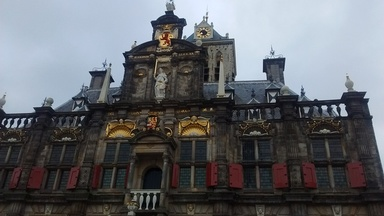
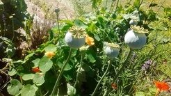

پیادهروی در دلفت-بیست جولای دوهزار و پانزده
2015-07-20 20:14

شهرداری قدیم دلفت یا همان هلندیساز از نمایی دیگر. دیوارها یه خاطر آتشسوزی سیاه نشدهاند. نتیجه اکسید شدن ترکیبات آهنی موجود در سنگ است.
تعطیلات در آلمان-هفده جولای دوهزار و پانزده
2015-07-17 20:14

خانههایی فانتزی در ساحل راین. روز آخر سفر و اوج خستگی بعد از یک روز پیادهروی در گرمای سی و چهار درجه که برای اروپای غربی کمی غریب است. بستنی خوبی هم خوردیم پرملات و خوشمزه، لطف ایرانی بستنیفروش بامرام اهل دوسلدرف. روز خوشی بود.
تعطیلات در آلمان-شانزده جولای دوهزار و پانزده
2015-07-16 20:14

آیدا سوار بر اسب مجسمه. گرمش بود و حوصله نداشت. چهرهاش هم نشان میدهد.

شقایق. کاسبرگش حاوی مقدار قابل توجهی شیره سفید رنگ است از همان جنسی که برای تولید تریاک استفاده میشود. نزدیک خانهمان در ایران هم از این گلها زیاد بود. با همین شکل و اندازه. این را در بیراههای در میان آلمان دیدم.
اصل خشخاش را اما در باغچهای دیدم در مرکز دلفت. یک خیابان پر از اینها. خشخاشهای رسیده و آماده تیغ خوردن:
